,
,  ist die Nullhypothese
ist die Nullhypothese  , dass die Mediane der verbundenen Stichproben gleich sind, während die Alternativhypothese
, dass die Mediane der verbundenen Stichproben gleich sind, während die Alternativhypothese  ein- oder beidseitig sein kann (siehe unten). Es wird berechnet:
ein- oder beidseitig sein kann (siehe unten). Es wird berechnet:
Der Vorzeichentest bei verbundenen Stichproben testet die Mediandifferenz zwischen Wertepaaren aus zwei einander entsprechenden Stichproben.
Für zwei einander entsprechende Stichproben , ist die Nullhypothese , dass die Mediane der verbundenen Stichproben gleich sind, während die Alternativhypothese ein- oder beidseitig sein kann (siehe unten). Es wird berechnet:
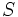
, die die Anzahl der Paare darstellt, bei denen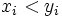
;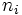
der nicht verbundenen Paare (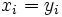
);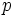
, die entspricht (angepasst, um das Komplement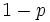
in einem oberen oder beidseitigen Test zu verwenden). ist die Wahrscheinlichkeit, einen Wert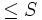
zu beobachten, wenn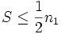
; oder einen Wert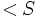
zu beobachten, wenn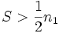
, vorausgesetzt, dasswahr ist. Wenn 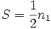
, dann ist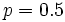
.Angenommen, der Signifikanztest einer gewählten Größe  soll durchgeführt werden (d.h., ist die Wahrscheinlichkeit, zurückzuweisen, wenn wahr ist; normalerweise ist ein kleiner Betrag wie 0,05 oder 0,01). Der zurückgegebene Wert von kann verwendet werden, um den Signifikanztest für die Mediandifferenz gegen verschiedene Alternativhypothesen durchzuführen, wie folgt:
soll durchgeführt werden (d.h., ist die Wahrscheinlichkeit, zurückzuweisen, wenn wahr ist; normalerweise ist ein kleiner Betrag wie 0,05 oder 0,01). Der zurückgegebene Wert von kann verwendet werden, um den Signifikanztest für die Mediandifferenz gegen verschiedene Alternativhypothesen durchzuführen, wie folgt:
: Median von 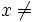
Median von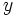
.wird zurückgewiesen, wenn 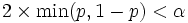
.: Median von 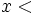
Median von .wird zurückgewiesen, wenn 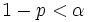
: Median von 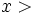
Median von .wird zurückgewiesen, wenn 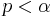
Weitere Einzelheiten zu dem Algorithmus finden Sie unter nag_sign_test (g08aac).